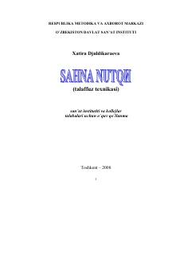

TTNutq madaniyatini oshirish va talaffuz nuqsonlarini bartaraf etish bo'yicha amaliy qo'llanma.
Ushbu o'quv qo'llanma san'at instituti va kollej talabalari uchun mo'ljallangan bo'lib, nutq madaniyatini oshirish va talaffuzdagi nuqsonlarni bartaraf etishga qaratilgan. Kitobda tovushlar ustida ishlash, orfoepiya me'yorlari va nutqni o'stirish bo'yicha amaliy mashqlar hamda uslubiy tavsiyalar keltirilgan.